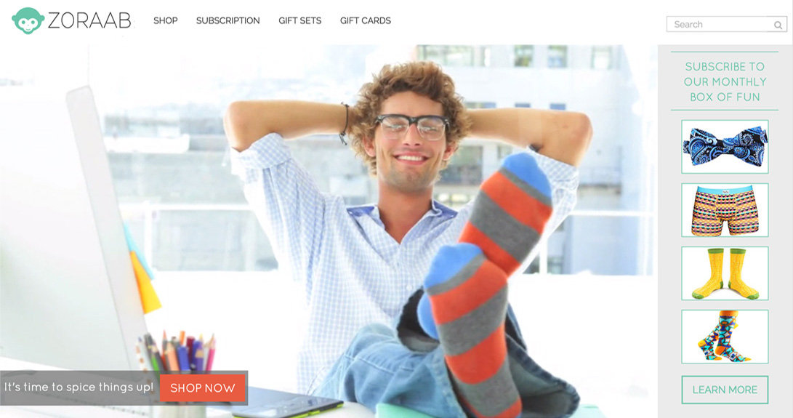
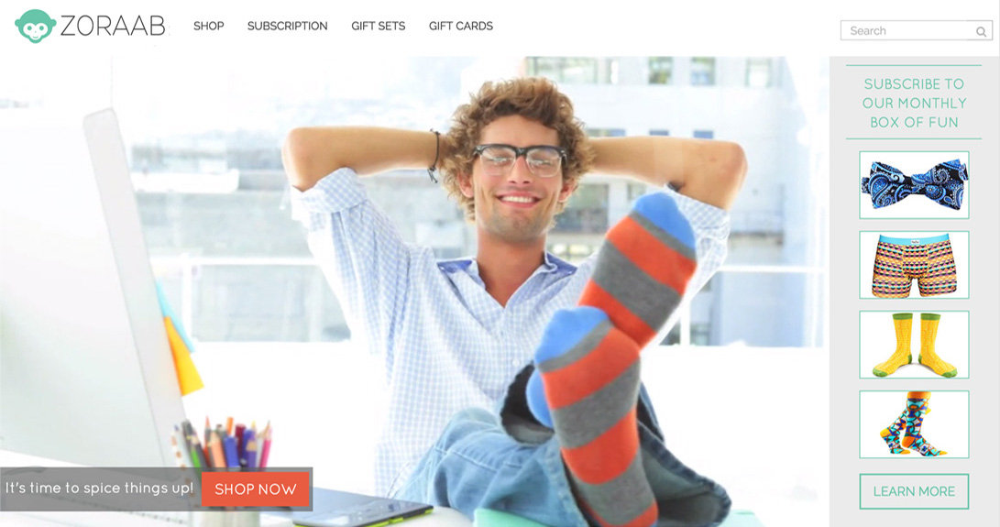

I believe good code is like good poetry, careful, expressive and inventive.

Coding is as much an art as it is a science and it should be beautifully written in a manner that eloquently communicates its properties so it can be built upon by another human being, even if that human being is a future version of the original author. The best code is not written in a dark basement somewhere by a hacker who pulled an all nighter just to make an app work by brute force. Good code is carefully planned and well thought out in a modular fashion that uses inventive solutions to solve complex problems so it can endure and last through time and be built upon. These are the standards I hold myself to in creating all of my projects. I have been coding on and off since the MySpace days of yesteryear but I’ve been pursuing it seriously for the past 4 years. I’ve gone through the infamously intense DevBootcamp out in San Francisco, and I have worked under some talented and seasoned developers through apprenticeships. I am a full stack developer, which means that I code both the front end (HTML/CSS) and back end (primarily Ruby on Rails). I’ve been at this for years now and everyday I seek to grow as a developer both through teaching beginners (at General Assembly and DevBootcamp), as well as learning more about the craft from the experts.
Building an enterprise requires revolutionary design that is rooted in well-engineered construction.
It requires a meeting of the minds between logical/critical perspective and blue sky thinking where there are no constraints. I’ve built three successful businesses in the past few years, all three of which I am equally passionate about and all three of which cater to different aspects of my personality. My first, Zoraab, is an online retailer and subscription service for men’s socks and underwear. My second business Mint Socks, is our own line of socks designed and developed in-house with inspiration drawn from the greatest street artists of our time. Both Zoraab and Mint Socks have seen considerable success and we’ve been able to build it from nothing into businesses that generate 7 figures in revenue. Recently, we’ve launched Fresh, a full service web design and development agency where we work with passionate start-ups in building their vision.

 I believe that a business should share the same properties as a good computer application, where its purpose is singularly focused and is able to launch quickly and often. It should not be everything to everyone and it certainly should not take years to launch. The greatest businesses rose to success by doing one thing and doing it well. It’s when you introduce too many additional services and items where the purpose and perception gets cloudy and the business model becomes bloated. This is the philosophy that I’ve followed in launching my past 3 businesses and will most likely be the framework under which I launch all my future ventures.
I believe that a business should share the same properties as a good computer application, where its purpose is singularly focused and is able to launch quickly and often. It should not be everything to everyone and it certainly should not take years to launch. The greatest businesses rose to success by doing one thing and doing it well. It’s when you introduce too many additional services and items where the purpose and perception gets cloudy and the business model becomes bloated. This is the philosophy that I’ve followed in launching my past 3 businesses and will most likely be the framework under which I launch all my future ventures.
When you combine blue-sky thinking with critical pragmatism, you get revolutionary results.
In another life, I spent 5 years working on the Fixed-Income Trading Floor at Bank of America Merrill Lynch while earning my Chartered Financial Analyst (CFA) Designation. I analyzed profit and loss behaviors across complex credit derivative instruments for a $5 billion business that traded and sold credit investments globally. Working here through the financial crisis of 2008 was a formative experience. I learned firsthand the dire imperative to managing your risk and how much havoc you can wreak when you have excessive risk exposures.
The financial world is full of noise and gyrations and as a consequence it is here where I learned to observe and react to global trends in a disciplined manner, and it was here where I obtained the skills for deep thinking, insightful analysis and educated forecasting. And, finally, among the chaos, it was here where I was driven to becoming a technologist, so that I can make trends instead of simply reacting to it. In my transition, one thing has become very clear: in Finance, you’re conditioned to question everything and critically analyze all prospects, whereas in tech you’re taught to believe everything is possible, and that sky’s the limit. When you combine that blue-sky thinking with this critical pragmatism, you get revolutionary results.
The financial world is full of noise and gyrations and as a consequence it is here where I learned to observe and react to global trends in a disciplined manner, and it was here where I obtained the skills for deep thinking, insightful analysis and educated forecasting. And, finally, among the chaos, it was here where I was driven to becoming a technologist, so that I can make trends instead of simply reacting to it. In my transition, one thing has become very clear: in Finance, you’re conditioned to question everything and critically analyze all prospects, whereas in tech you’re taught to believe everything is possible, and that sky’s the limit. When you combine that blue-sky thinking with this critical pragmatism, you get revolutionary results.
Portfolio
~
Zoraab
An online and subscription service for men’s socks, underwear and accessories.
Learn More
 

Zoraab was an interesting project where we had to balance the desire to make a beautiful design with the need to keep things simple and usable all the while maintaining minimal load times. E-Commerce sites such as Zoraab that hold over 500 SKUs poses interesting challenges. I built this Shopify theme completely from scratch to fit all the design specifications that my sister, the UX Designer, deemed necessary based on her focus groups. In addition to the shopping experience, we built a subscription process where users can also subscribe to receive products monthly. We also designed and developed this project rather quickly in 4-6 weeks!
~
Mint
An E-Commerce site for a manufactured line of graffiti art inspired fashion socks.
Learn More
I thoroughly enjoyed building the website for Mint. Unlike previous projects, there weren’t as many constraints especially since this brand only had 10 SKUs. As a result, we went into more of an artistic direction to create a beautiful and fun experience for the user. This was a one-page site done through parallax on a Shopify Theme (from scratch of course) and required quite a bit of JS/JQuery as well as AJAX to get everything working just right. The load time optimization process was a bit cumbersome but in the end worked out beautifully. This is definitely a project special to me given how much creative license we were able to take.
~
Stats Dojo
An Full Stack web application that educates and tests students in statistics.
Learn More
StatsDojo was a thoroughly rewarding project to work on as I built both the back end and the front end from the ground up. It was built for a Statistics professor who wanted a better method in teaching and testing Statistics to his students. With StatsDojo, students can view videos on a particular topic, take a 30 question multiple-choice quiz on that topic and receive feedback on their strengths and weaknesses. Also, the more quizzes they pass the more belts they receive further progressing them to become the ultimate Stats Dojo! This application is built entirely with Ruby on Rails, and code quality was a huge focus for me. As a result there is unit testing à la RSPEC covering more than 95% of the code.
Skills
Services
Front End Web Design Development
Full Stack Custom Ruby on Rails Application Development
Shopify Theme and Application Design and Development
Wordpress Theme Design and Development
A Few of my Favorite Things
Lana Del Rey
One of the greatest artists of our time. Hands down. When you see me in my coding zone with my headphones in, I’m usually blasting a Lana remix.
Any Human Heart
This book is one of my all time favorites and very formative for me. It’s about a man who lives his life through all the major events of the 20th century. Fascinating read.
Funky Socks
Obviously my favorite accessory, I have built TWO businesses around this. You’ll never catch me with a white pair of socks on!

Carte Blanche
A Jazz revivalist band based out of NYC that I had the pleasure of discovering at the Manderley Bar at Sleep No More. Always try to catch them when they’re playing around town.
Bollywood
Nothing puts me in my comfort zone like an illustrious Bollywood movie complete with beautiful sets and grandiose music. Some of my favorites are the Aishwarya classics: Taal, Devdas and Umrao Jaan.
Prosecco
Never a beer drinker. If you’re ever looking to buy me a gift that will always put me in a fantastic mood!
Beyoncé
I’ve been a huge fan way before the masses came in. Ever since she’s been singing “No No No” I’ve been saying “YAS YAS YASSSSS!”

The Good Wife
One of the best shows on network TV! I always say, if programming, entrepreneurship or finance didn’t work out, I would most certainly head to law school immediately. I definitely have an inner lawyer in me and a total legal buff.
Indian Fashion
One of the main reasons I even attend any Indian wedding is just so I can whip out my Sherwani and rock it! If I had it my way, I’d wear a fierce Sherwani to the office like everyday!

Drag Queens
I love drag queens. A good drag show is the fastest way to make a day go from boring and sad to fun, glamorous and fierce! Some of my favs, Bianca Del Rio, Shequida, Logan Hardcore and Peppermint.
Fierce Bowties
I love bowties! Especially fierce ones! Or as I like to call it a “fashion hack”: take a bland boring outfit and instantly change it up.
Fire Island
Ah Paradise on Earth! I basically grew up here, spending half my summers ever since I was 19.
Mr. Selfridge
One of the best miniseries on TV—a rags to riches story following the rise of one of the greatest department stores in the 20th century.
Jane Eyre
Classic. Another formative novel in my life.
Sex and the City
The main reason I moved to NYC! I'm probably one of the few people left who still watches this show regularly—the writing is timeless.
Bombay
I grew up in Bombay and try to get out there every chance I get!